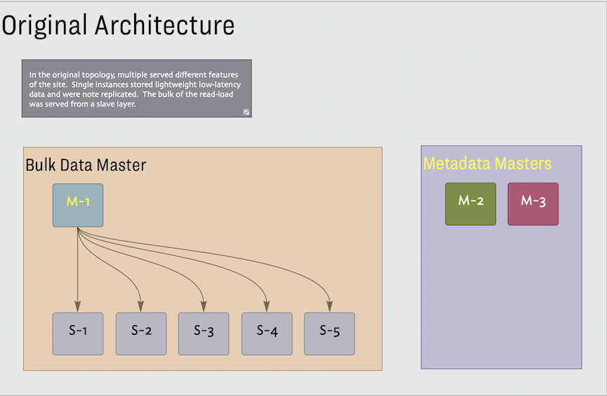
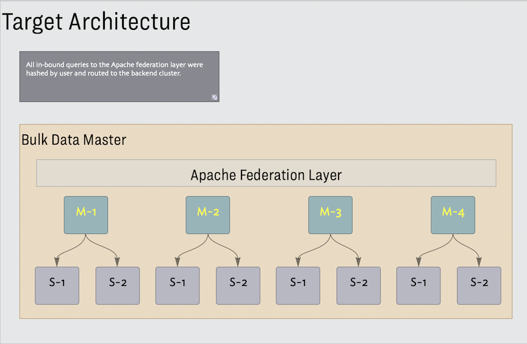

| Dates: | Jun 2006 - Jun 2008 |
| Role: | Developer |
| Technologies: | apache, mysql |
| Programming Languages: | c++, erlang, perl |
| DSLs: | make, sql |
Provide a simple way to save URLS, associate them with tags. Support publishing url sets via RSS, and social discovery.
I was responsible for guaranteeing reliable migration of the legacy data to the new data architecture. I implemented the sql query generator for the new federated system. I also implemented the migration system to support bi-directional migration between the original infrastructure and the new federated database layer.
Provide a logic to map incoming URL query strings to federation aware SQL queries. Provide a robust mechanism for migrating the original data into the new federated system. This solution needed to support data integrity testing, tear-down and rebuild of the new data sub-system and support launch-time scenarios.
Data Migration
The database organization of the acquired company had all the warts and faults of a fast developing product. In addition to inconsistent schema changes, there were inconsistencies in data formatting which were managed by a special layer of data munging code. Additionally, different features on the site depended on different master/slave configurations. The original system used over 30 database instances. Our target was 6 clusters of master/slave triples requiring 18 databases.


⁃ This was achieved by running the Perl scrubbing code within Erlang processes as the data was read from the source infrastructure.
⁃ The Erlang VM on the processing hosts was instrumented to monitor machine memory and use an exponential back-off on the data readers to accommodate memory surges.
⁃ Data processing logs were written to Mnesia which made it easy to aggregate processing results from multiple replication hosts and simple to query
⁃ The fault tolerance capabilities of Erlang were critical, write operations were scoped to individual Erlang processes which localized failure and retry at the most granular level
⁃ At launch the original database configurations handled writes and reads were served from the new infrastructure. The migration logic maintained live parity between the two systems until stake holders were comfortable cutting writes over to the new system.
⁃ This was a fail-safe. Allow the team to cut back to the old system after writes had started flowing to the new databases.
Query Generator
This code needed to map incoming URL query strings into the underlying - federation aware - SQL. In the simple case a user was accessing their own data and this was a single query mapped to a single cluster. Accessing tagged data from a user’s social network would require multiple concurrent queries. There are a few more scenarios which I can no longer recall. The query generator logic was executed in the Apache Servers providing the Federation Layer.
There was existing legacy perl code which managed the various ‘special cases’ in the original data. This code was running in production and needed to be incorporated into the migration logic. At the same time this needed to be runnable in a parallel concurrent environment. Erlang was used for the concurrency layer. The production interface provided a log table of all transactions executed in production. This ‘queue’ was consumed by migrator nodes. The log tracked CREATE, UPDATE, DELETE operations for user histories. A migrator node would consume the command history for a given user and replay the command sequence against the new federation layer.
There were multiple migrator nodes and each was assigned the set of users that mapped to a particular federation cluster. These nodes needed to monitor host memory to slow down reads from the queue based on the performance characteristics of the data scrubbing and write operations. This was done by monitoring local memory and adjusting read rates with a backoff. Each record ( a url with tags and comments etc. ) was passed through the perl scrubbing code in the Erlang environment. This leveraged a perl marshaling layer to pass the Erlang representation read from the queue into perl accessible formats and to convert the ‘scrubbed’ data back into Erlang types before writing them to the federation layer. All operations were logged in a distributed in-memory database which made it easy to track progress and verify extremely low failure rates. I was able to run 100’s of perl interpreters on a fleet boxes to increase the throughput of the overall migration process.
The query generator was implemented using the BOOST Spirit Recursive Descent Parser Generator.
The query generator was deployed to production. Multiple (~30) full migrations were executed. This supported development, stress testing and verification. During the process of launching the new Delicious architecture this system provided bi-directional replication.
An experience report was presented at the Commercial Users of Functional Programming conference in 2008.
Developing Erlang At
Yahoo! sold delicious to AVOS in 2011.
| Yogish Baliga: | https://www.linkedin.com/in/baliga/ |
| David Yan: | https://www.linkedin.com/in/davidyan1/ |
| Abe Taha: | https://www.linkedin.com/in/abe-taha/ |